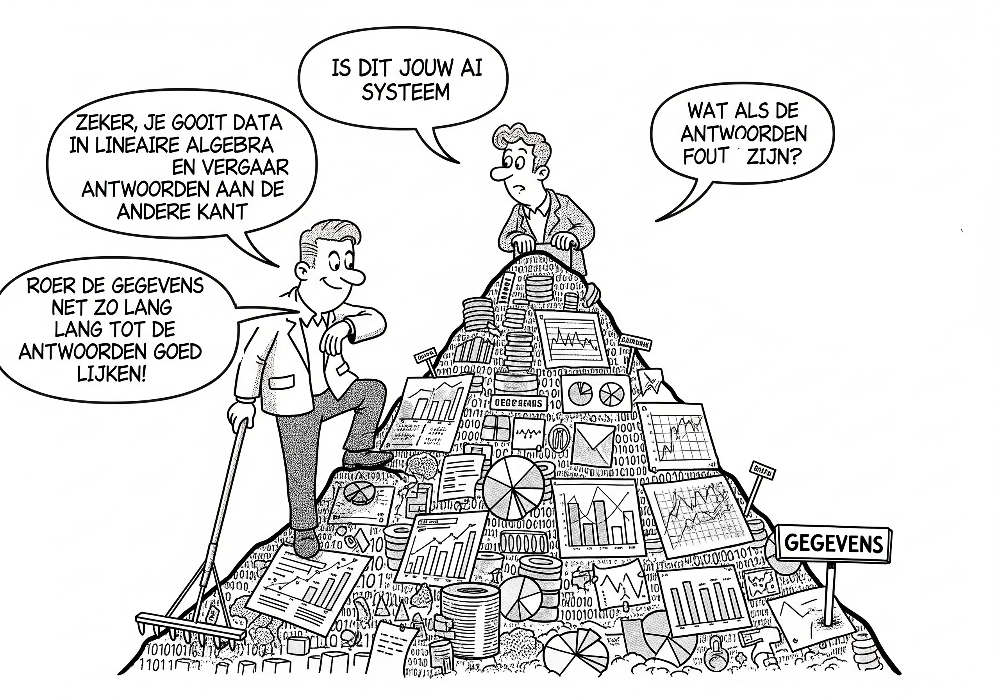

But what is RIGHT? And is that enough? (Image: Machine Learning, XKCD)
Voor de volledigheid van dit onderdeel van de lessenserie verwijzen we je eerst naar de paragrafen over de FAST en de FAIR principes in het hoofdstuk Ethiek uit het algemene deel. De rest van deze verdieping kan niet zonder goede kennis van deze principes. Ben je het begrip van deze principes kwijt, neem de hoofdstukken dan nogmaals door.
Je hebt voor verdieping in ethiek en AI gekozen. Misschien had je na het bestuderen van de paragrafen FAST en FAIR al wat ideeën over onderwerpen die je nader wilde onderzoeken. Noteer die alvast ergens, wie weet kun je die straks gebruiken voor je essay.